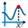

This object is created via icon

.Allows the user to calculate the abscissa of the maximum of a function on an interval [a; b].
The value is ascertained to be accurate only if the function is increasing from a up to the maximum and then decreasing until b.
In the dialog box popping up you must :